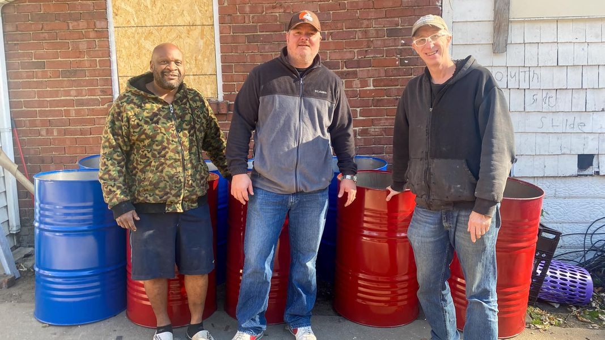

Mobile uploads
The man in the middle of this picture is Derek. Derek bought 10 barrels, pictured here, that we are going to use for Burn Barrels for homeless people in Akron, Ohio this winter.
Derek lives near the Akron-Canton Airport. He has supported the homeless community of Akron for years.
He bought these barrels, loaded them all on his truck, and then drove the 30 minutes up the highway to deliver them to us.
I can’t always get supporters to let me tell their story. They don’t want to take any credit for the work that they do. But I like to try to convince them to let me tell their story for two main reasons.
The first reason is to show all the different kinds of people that are helping the homeless community. My hope is that maybe it inspires other people to help as well.
My second reason is probably more important. I try to tell these stories of kindness and giving and compassion as much as possible to counteract all the negativity we are constantly inundated with. We live in an era of social media, where terrifying and depressing news is everywhere. I sometimes think the entire United States economy is running on our fears, like that nightmare factory in Monsters, Inc.
The reality is that there is kindness and compassion, and people going way out of their way to help make things better constantly. And in fact, the worse things get the more people flock to help.
I am quite sure Derek is a busy man. He probably has a ton of other things he needed to do. But he chose to stop everything, plunk down $100 for these barrels and then drive them to the east side of Akron.
People going out of their way to do good things always astounds me. But I see it constantly
A mom messaged me yesterday to say that her nine-year-old son wants to make lunches and take them to homeless people. I regularly come home to find bags of amazing donations on my porch. The goodness just never ends.
The goodness and kindness that I see in people of all races and genders and political ideologies is mind blowing. You all are so wonderful. Thank you for everything.